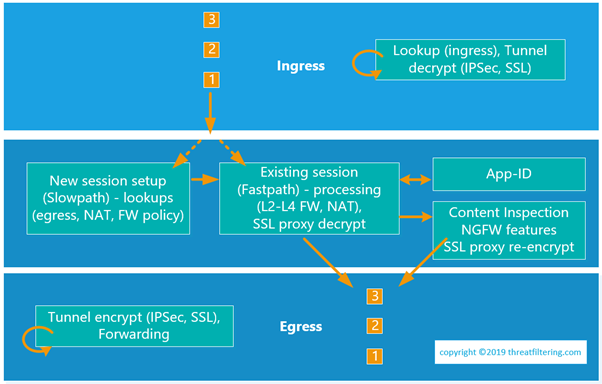
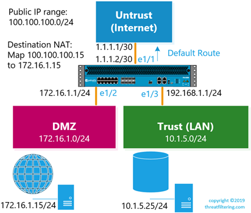

Packet Flow and Order of Operations in PAN-OS
Order of operations in Palo Alto Networks firewalls consists of 6 stages: Ingress > Session Setup (Slowpath) > Existing Session (Fastpath) > Application Identification > Content Inspection > Egress Forwarding. Understanding how traffic is being processed within the firewall is important for writing security and NAT policies and troubleshooting. The following sections provide information about each of the stages.
Logical packet flow within Palo Alto firewall is depicted in the diagram below.
Ingress stage
As a packet enters one of the firewall interfaces it goes through ingress processing. During this stage, frames, packets and Layer 4 datagrams are validated to ensure that there are no network-layer issues, such as incorrect checksums or truncated headers.
Then the source security zone lookup is done based on the incoming interface. If the packet matches an established IPSec or SSL tunnel it is decrypted, in which case zone lookup is done against the tunnel-associated interface.
Session Setup (Slowpath)
What is a flow and a session?
Flow is group of packets with matching:
- Source and Destination IP addresses
- Protocols
- Source and Destination Ports (for UDP/TCP)
- Specific Protocol Identifiers (for non-UDP/TCP)
- Source Zone
A session from the firewall perspective consists of two unidirectional flows:
- Client-to-server
- Return server-to-client
In the diagram above, packets 1, 2, 3 are from the same session. A session is created with the first packet which follows slow path. Subsequent packets don’t require lookups performed during session setup and as result they skip this step following fast path.
How session setup works?
Session is created after the following steps are performed:
- Route lookup for forwarding (for Layer 3 interfaces)
- MAC table lookup (for Layer 2 interfaces)
- Network Address Translation (NAT) lookup
- User-ID lookup
- Security Policy lookup
Consider the example in the following diagram. In this example, the firewall has 3 interfaces each allocated to a zone. There are no routes configured, apart from the default route with the next hop of 1.1.1.1. Service provider has allocated a public IP address range of 100.100.100.0/24.
Route lookup is based on destination IP address of the packet and MAC table lookup is based on destination MAC address of the frame. Both lookups return information on egress interface. The logic is straightforward if there is no NAT in use. The first packet from the web server to the database server in trusted zone will trigger new session entry. The source interface and zone is known, as the packet is received on E1/2 interface of DMZ zone. The destination interface and zone lookup return directly connected network 10.1.5.0/24, which is reachable over E1/3 interface in Trust zone. Security policy will be looking through rules having DMZ zone as the source and Trust zone as destination.
If there are any NAT policy rules configured on the firewall, then the NAT lookup is performed.
How NAT policy lookup works in Palo Alto?
As per diagram above, an administrator wants to configure destination NAT, so users on Internet can connect to a Web server in DMZ with the IP address of 172.16.1.15. As it is private IP address, it has to be mapped to a public IP address (100.100.100.15) from the allocated pool.
NAT policy lookup will be triggered on a first packet coming from the client on Internet. Source interface and zone are E1/1 and Untrust. The destination IP address in the packet is 100.100.100.15 (pre-NAT). Route lookup will return default route pointing to Internet via E1/1. Therefore, source and destination zones are the same – Untrust. Packets in the return flow will be also translated, as they constitute the same session.
However, if this server will initiate a new session to a server on the Internet, the packet will not match the destination NAT entry. Additional source NAT entry is required with Trust as source and Internet as destination zone.
To combine one-to-one destination and source NAT described in previous 2 paragraphs, an administrator can configure static bi-directional source NAT.
With the destination NAT the router performs second interface lookup based on post-NAT address. In this case, this second lookup will return E1/3 and Trust. It will be used for the security policy lookup later, NAT rule still references Untrust as both source and destination zone.
During this stage the packet is not changed. NAT is done later, in the Fastpath stage.
How security policy lookup works in Palo Alto with NAT?
If destination NAT is in use – security policy must reference pre-NAT IP addresses, as the system hasn’t modified the packet yet. However, the destination zone is post-NAT, as the second interface and zone is known after NAT policy lookup.
Security Policy Processing (Fastpath), App-ID and Content Inspection
The next stages are responsible for application of the security policies. Firewall checks the traffic against Layer 2 to Layer 4 rules. For TCP traffic protocol-based security inspection is also performed. During Fastpath NAT is applied if configured.
Palo Alto firewalls are built using Single-Pass Parallel Processing (SP3) Architecture in which traffic stream is scanned only once by having different firewall features to use the same signature format, so they can be applied simultaneously in parallel. This minimizes delays caused by packet buffering.
Features that are applied in parallel:
- Application identification
- User and group mapping
- Content scanning
Firewall can recognize the application from traffic flow by using signatures, as opposed to just looking at protocol and port numbers. This feature is called App-ID. User and group mapping allows firewall to use users and groups in policies, instead of IP addresses. Content scanning responsibilities are threat detection, prevention, URL filtering.
Egress Forwarding stage
Finally, the packets are prepared to be sent over the network. During this stage network-related processing is done, such as traffic shaping, IP fragmentation. If the traffic is for VPN, encryption is done during this stage.